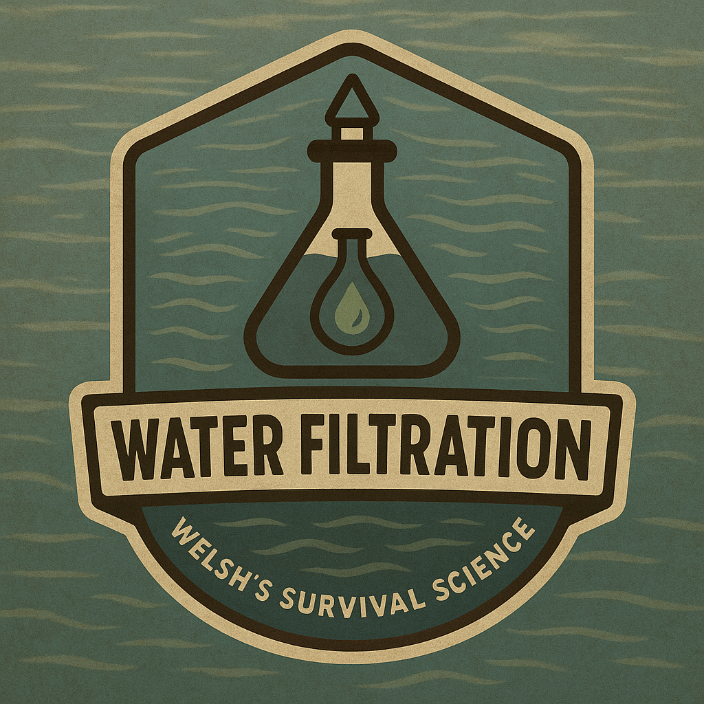
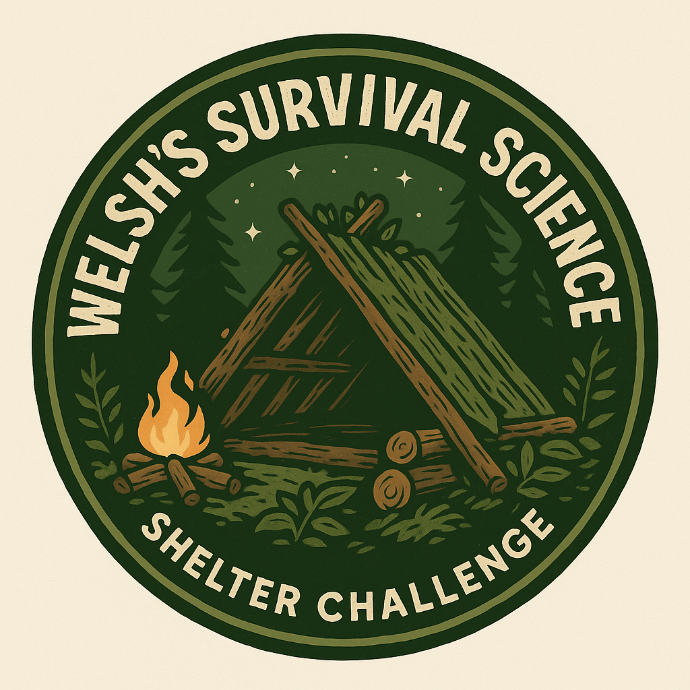
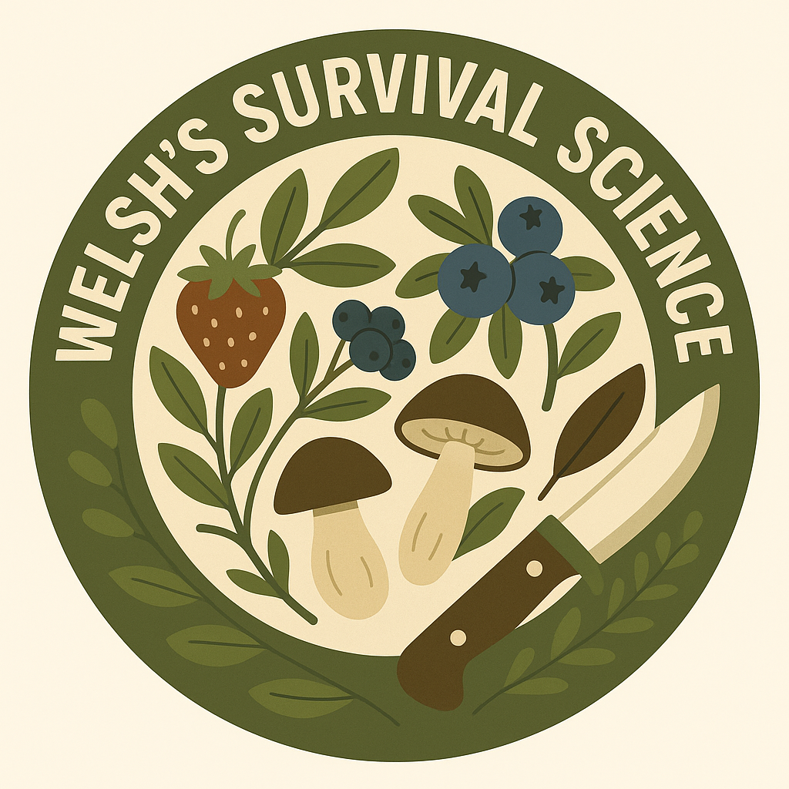

Water Filtration Chemistry Kit
Teaches properties, changes, and mixtures of matter through hands-on water purification projects.

Survival Physics: Shelter Design Challenge
Engage students with force, motion, and energy through engineering their own model shelters.

Biology in the Wild: Adaptation Simulation
Explore natural selection, genetics, and ecosystems with interactive, survival-themed labs.